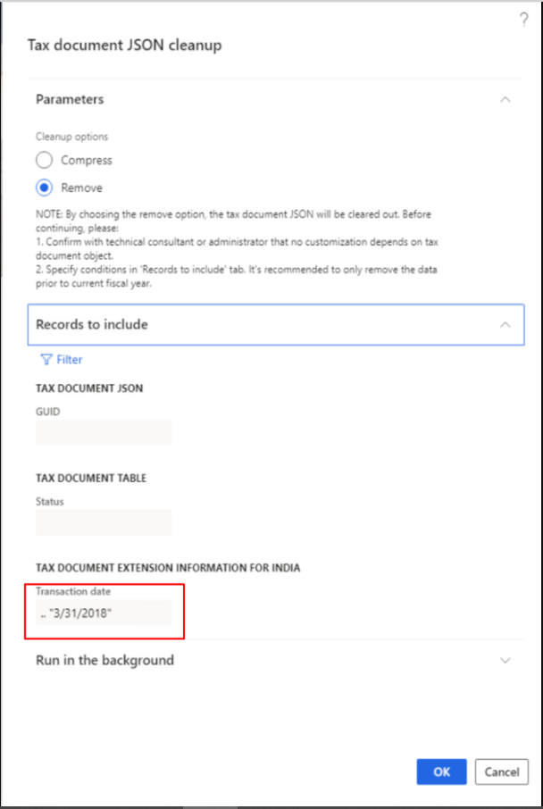

Clean up the TaxDocumentJSON table
Supported versions
- Version 10.0.13 and later support compressing old data from versions that are earlier than 10.0.9.
- Version 10.0.14 and later support removing data.
Purpose
As the system runs, more and more data is produced, and the database size continues to increase. To free up space in the database, you can clean up old data. During cleanup, if you observe that the TaxDocumentJSON table is using too much space, you can follow the steps in this topic to clean it up.
Before you begin
Before you begin the cleanup, complete the following tasks:
- Contact the customer's technical consultant or administrator, and confirm that no customization depends on the tax document object of the posted transaction.
- Ask the customer to work with its business department to determine a date that all transactions have been closed before.
- Export and back up the data of the TaxDocumentJSON table.
Clean up the database
Verify that you've turned on the following flighted feature: TaxRemoveDependenciesOnTaxDocumentJSONFlighting.
Go to Tax > Periodic tasks > Tax document JSON cleanup.
Select the Remove option.
Note
The Compress option is used to compress the tax document JavaScript Object Notation (JSON) from versions that are earlier than 10.0.9. This compression is a one-time optimization.
The following note appears. Be sure to verify that the customer understands the impact of the change.
NOTE: By choosing the remove option, the tax document JSON will be cleared out. Before continuing, please:
1. Confirm with technical consultant or administrator that no customization depends on tax document object.
2. Specify conditions in 'Records to include' tab. It's recommended to only remove the data prior to current fiscal year.On the Records to include FastTab, specify the conditions that you confirmed with the customer's business department. For example, you've agreed to remove the tax document JSON before March 31, 2018. In this case, in the Tax document extension information for India section, in the Transaction date field, specify 31/3/2018.

Select OK to start the cleanup.